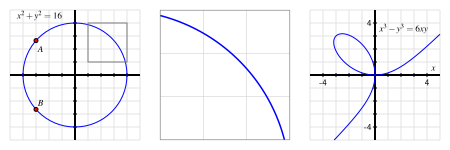
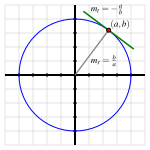
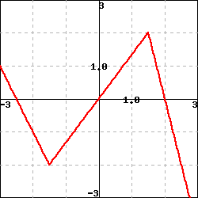

Section2.7Derivatives of Functions Given Implicitly
Motivating Questions
What does it mean to say that a curve is an implicit function of \(x\text{,}\) rather than an explicit function of \(x\text{?}\)
How does implicit differentiation enable us to find a formula for \(\frac{dy}{dx}\) when \(y\) is an implicit function of \(x\text{?}\)
In the context of an implicit curve, how can we use \(\frac{dy}{dx}\) to answer important questions about the tangent line to the curve?
In all of our studies with derivatives so far, we have worked with functions whose formula is given explicitly in terms of \(x\text{.}\) But there are many interesting curves whose equations involving \(x\) and \(y\) are impossible to solve for \(y\) in terms of \(x\text{.}\)

Figure2.7.1.At left, the circle given by \(x^2 + y^2 = 16\text{.}\) In the middle, the portion of the circle \(x^2 + y^2 = 16\) that has been highlighted in the box at left. And at right, the curve given by \(x^3 - y^3 = 6xy\text{.}\)
Perhaps the simplest and most natural of all such curves are circles. Because of the circle’s symmetry, for each \(x\) value strictly between the endpoints of the horizontal diameter, there are two corresponding \(y\)-values. For instance, in Figure 2.7.1, we have labeled \(A = (-3,\sqrt{7})\) and \(B = (-3,-\sqrt{7})\text{,}\) and these points demonstrate that the circle fails the vertical line test. Hence, it is impossible to represent the circle through a single function of the form \(y = f(x)\text{.}\) But portions of the circle can be represented explicitly as a function of \(x\text{,}\) such as the highlighted arc that is magnified in the center of Figure 2.7.1. Moreover, it is evident that the circle is locally linear, so we ought to be able to find a tangent line to the curve at every point. Thus, it makes sense to wonder if we can compute \(\frac{dy}{dx}\) at any point on the circle, even though we cannot write \(y\) explicitly as a function of \(x\text{.}\)
We say that the equation \(x^2 + y^2 = 16\) defines \(y\)implicitly as a function of \(x\text{.}\) The graph of the equation can be broken into pieces where each piece can be defined by an explicit function of \(x\text{.}\) For the circle, we could choose to take the top half as one explicit function of \(x\text{,}\) namely \(y = \sqrt{16 - x^2}\) and the bottom half as the explicit function \(y = -\sqrt{16 - x^2}\text{.}\) The equation for the circle defines an implicit function of \(x\text{.}\)
The righthand curve in Figure 2.7.1 is called the folium of Descartes and is just one of many fascinating possibilities for implicitly given curves.
How can we find an equation for \(\frac{dy}{dx}\) without an explicit formula for \(y\) in terms of \(x\text{?}\) The following preview activity reminds us of some ways we can compute derivatives of functions in settings where the function’s formula is not known.
Preview Activity2.7.1.
Let \(f\) be a differentiable function of \(x\) (whose formula is not known) and recall that \(\frac{d}{dx}[f(x)]\) and \(f'(x)\) are interchangeable notations. Determine each of the following derivatives of combinations of explicit functions of \(x\text{,}\) the unknown function \(f\text{,}\) and an arbitrary constant \(c\text{.}\)
We begin our exploration of implicit differentiation with the example of the circle given by \(x^2 + y^2 = 16\text{.}\) How can we find a formula for \(\frac{dy}{dx}\text{?}\)
By viewing \(y\) as an implicit function of \(x\text{,}\) we think of \(y\) as some function whose formula \(f(x)\) is unknown, but which we can differentiate. Just as \(y\) represents an unknown formula, so too its derivative with respect to \(x\text{,}\)\(\frac{dy}{dx}\text{,}\) will be (at least temporarily) unknown.
So we view \(y\) as an unknown differentiable function of \(x\) and differentiate both sides of the equation with respect to \(x\text{.}\)
Note carefully the different roles being played by \(x\) and \(y\text{.}\) Because \(x\) is the independent variable, \(\frac{d}{dx} \left[x^2\right] = 2x\text{.}\) But \(y\) is the dependent variable and \(y\) is an implicit function of \(x\text{.}\) Recall Preview Activity 2.7.1, where we computed \(\frac{d}{dx}[f(x)^2]\text{.}\) Computing \(\frac{d}{dx}[y^2]\) is the same, and requires the chain rule, by which we find that \(\frac{d}{dx}[y^2] = 2y^1 \frac{dy}{dx}\text{.}\) We now have that
There are several important things to observe about the result that \(\frac{dy}{dx} = -\frac{x}{y}\text{.}\) First, this expression for the derivative involves both \(x\) and \(y\text{.}\) This makes sense because there are two corresponding points on the circle for each value of \(x\) between \(-4\) and \(4\text{,}\) and the slope of the tangent line is different at each of these points.
Second, this formula is entirely consistent with our understanding of circles. The slope of the radius from the origin to the point \((a,b)\) is \(m_r = \frac{b}{a}\text{.}\) The tangent line to the circle at \((a,b)\) is perpendicular to the radius, and thus has slope \(m_t = -\frac{a}{b}\text{,}\) as shown in Figure 2.7.2. In particular, the slope of the tangent line is zero at \((0,4)\) and \((0,-4)\text{,}\) and is undefined at \((-4,0)\) and \((4,0)\text{.}\) All of these values are consistent with the formula \(\frac{dy}{dx} = -\frac{x}{y}\text{.}\)
Figure2.7.2.The circle given by \(x^2 + y^2 = 16\) with point \((a,b)\) on the circle and the tangent line at that point, with labeled slopes of the radial line, \(m_r\text{,}\) and tangent line, \(m_t\text{.}\)
Example2.7.3.
For the curve given implicitly by \(x^3 + y^2 - 2xy = 2\text{,}\) shown in Figure 2.7.4, find the slope of the tangent line at \((-1,1)\text{.}\)
For the three derivatives we now must execute, the first uses the simple power rule, the second requires the chain rule (since \(y\) is an implicit function of \(x\)), and the third necessitates the product rule (again since \(y\) is a function of \(x\)). Applying these rules, we now find that
We want to solve this equation for \(\frac{dy}{dx}\text{.}\) To do so, we first collect all of the terms involving \(\frac{dy}{dx}\) on one side of the equation.
Note that the expression for \(\frac{dy}{dx}\) depends on both \(x\) and \(y\text{.}\) To find the slope of the tangent line at \((-1,1)\text{,}\) we substitute the coordinates into the formula for \(\frac{dy}{dx}\text{,}\) using the notation
This value matches our visual estimate of the slope of the tangent line shown in Figure 2.7.4.
Example 2.7.3 shows that it is possible when differentiating implicitly to have multiple terms involving \(\frac{dy}{dx}\text{.}\) We use addition and subtraction to collect all terms involving \(\frac{dy}{dx}\) on one side of the equation, then factor to get a single term of \(\frac{dy}{dx}\text{.}\) Finally, we divide to solve for \(\frac{dy}{dx}\text{.}\)
to denote the evaluation of \(\frac{dy}{dx}\) at the point \((a,b)\text{.}\) This is analogous to writing \(f'(a)\) when \(f'\) depends on a single variable.
There is a big difference between writing \(\frac{d}{dx}\) and \(\frac{dy}{dx}\text{.}\) For example,
gives an instruction to take the derivative with respect to \(x\) of the quantity \(x^2 + y^2\text{,}\) presumably where \(y\) is a function of \(x\text{.}\) On the other hand,
means the product of the derivative of \(y\) with respect to \(x\) with the quantity \(x^2 + y^2\text{.}\) Understanding this notational subtlety is essential.
Activity2.7.2.
Consider the curve defined by the equation \(x = y^5 - 5y^3 + 4y\text{,}\) whose graph is pictured in Figure 2.7.5.
Explain why it is not possible to express \(y\) as an explicit function of \(x\text{.}\)
Use implicit differentiation to find a formula for \(dy/dx\text{.}\)
Use your result from part (b) to find an equation of the line tangent to the graph of \(x = y^5 - 5y^3 + 4y\) at the point \((0, 1)\text{.}\)
Use your result from part (b) to determine all of the points at which the graph of \(x = y^5 - 5y^3 + 4y\) has a vertical tangent line.
It is natural to ask where the tangent line to a curve is vertical or horizontal. The slope of a horizontal tangent line must be zero, while the slope of a vertical tangent line is undefined. Often the formula for \(\frac{dy}{dx}\) is expressed as a quotient of functions of \(x\) and \(y\text{,}\) say
The tangent line is horizontal precisely when the numerator is zero and the denominator is nonzero, making the slope of the tangent line zero. If we can solve the equation \(p(x,y) = 0\) for either \(x\) and \(y\) in terms of the other, we can substitute that expression into the original equation for the curve. This gives an equation in a single variable, and if we can solve that equation we can find the point(s) on the curve where \(p(x,y) = 0\text{.}\) At those points, the tangent line is horizontal.
Similarly, the tangent line is vertical whenever \(q(x,y) = 0\) and \(p(x,y) \ne 0\text{,}\) making the slope undefined.
Activity2.7.3.
Consider the curve defined by the equation \(y(y^2-1)(y-2) = x(x-1)(x-2)\text{,}\) whose graph is pictured in Figure 2.7.6. Through implicit differentiation, it can be shown that
Use this fact to answer each of the following questions.
Determine all points \((x,y)\) at which the tangent line to the curve is horizontal. (Use technology appropriately to find the needed zeros of the relevant polynomial function.)
Determine all points \((x,y)\) at which the tangent line is vertical. (Use technology appropriately to find the needed zeros of the relevant polynomial function.)
Find the equation of the tangent line to the curve at one of the points where \(x = 1\text{.}\)
For each of the following curves, use implicit differentiation to find \(dy/dx\) and determine the equation of the tangent line at the given point.
\(x^3 - y^3 = 6xy\text{,}\)\((-3,3)\)
\(\sin(y) + y = x^3 + x\text{,}\)\((0,0)\)
\(3x e^{-xy} = y^2\text{,}\)\((0.619061,1)\)
Subsection2.7.2Summary
In an equation involving \(x\) and \(y\) where portions of the graph can be defined by explicit functions of \(x\text{,}\) we say that \(y\) is an implicit function of \(x\text{.}\) A good example of such a curve is the unit circle.
We use implicit differentiation to differentiate an implicitly defined function. We differentiate both sides of the equation with respect to \(x\text{,}\) treating \(y\) as a function of \(x\) by applying the chain rule. If possible, we subsequently solve for \(\frac{dy}{dx}\) using algebra.
While \(\frac{dy}{dx}\) may now involve both the variables \(x\) and \(y\text{,}\)\(\frac{dy}{dx}\) still gives the slope of the tangent line to the curve. It may be used to decide where the tangent line is horizontal (\(\frac{dy}{dx} = 0\)) or vertical (\(\frac{dy}{dx}\) is undefined), or to find the equation of the tangent line at a particular point on the curve.
Exercises2.7.3Exercises
1.Implicit differentiation in a polynomial equation.
Find the derivative of the function \(y(x) = a^x + x^a\text{.}\) Assume that \(a\) is a positive constant.
\(y'(x) =\)
2.Implicit differentiation in an equation with logarithms.
(a)Parts a and b.
Consider the function \(g(x) = 2^x\) , which is graphed below, along with the tangent lines to the graph at \(x=-2,-1,0,1,2\text{.}\)
(Click on graph to enlarge. You may have to resize the popup window.)
Use the provided grid to estimate the slope of each tangent line. Your estimates need to be within 10% of the correct answer.
\(g'(-2) =\)
\(g'(-1) =\)
\(g'(0) =\)
\(g'(1) =\)
\(g'(2) =\)
(b)Part c.
The function \(g(x) = 2^x\) is graphed below, along with the tangent line to the graph at \(x=0\text{.}\)

Use the definition of the derivative, with \(h=0.01\text{,}\) to estimate the value of \(g'(0)\text{.}\)
\(g'(0) \approx\)
Use the definition of the derivative, with \(h=0.001\text{,}\) to estimate the value of \(g'(0)\text{.}\)
\(g'(0) \approx\)
Which of the following constants appears to be closest to \(g'(0)\text{?}\)
A. \(2 \)
B. \(\ln 2 \)
C. \(\frac{1}{2} \)
D. \(\sqrt{e}\)
E. \(1\)
F. \(0\)
G. None of these
(c)Parts d and e.
The function \(g(x) = 2^x\) is graphed below on the left, and its derivative \(g'(x)\) is graphed on the right.
Note that it is reasonable to think that \(g'(x) = cg(x)\text{,}\) where \(c\) is a constant, because the two graphs look very similar - it’s possible the only difference between them is a vertical scaling.
Note also that \(g(0)=2^0=1\text{,}\) and you estimated \(g'(0)\) in part c.
If it is true that \(g'(x) = cg(x)\text{,}\) what is the value of \(c\text{?}\)
\(c=\)
3.Implicit differentiation in an equation with inverse trigonometric functions.
Let
\begin{equation*}
f(x) = 5 \sin x + 10 \cos x
\end{equation*}
\(f'(x) =\)
\(f'( \frac { 5 \pi } {4} ) =\)
4.Slope of the tangent line to an implicit curve.
In this problem, please evaluate the trig functions without a calculator and do not use a decimal point in your answer.
An equation of the tangent line to the curve \(y = \sin (x)\) at \(x = 3\pi/4 \,\) is
\(y =\)\(+\)\(\cdot (x - 3\pi/4)\) .
An equation of the tangent line to the curve \(y = \cos (x)\) at \(x = 7\pi/4 \,\) is
\(y =\)\(+\)\(\cdot (x - 7\pi/4)\) .
5.Equation of the tangent line to an implicit curve.
A mass on a spring vibrates horizontally on a smooth level surface (see the figure). Its equation of motion is \(x(t)=6 \sin{t}\text{,}\) where \(t\) is in seconds and \(x\) in centimeters.
(a) Find the velocity at time \(t\text{.}\)
(b) After finding the velocity of the mass at time \(t=2\pi/3\text{,}\) in what direction is it moving at that time?
Answer "l" for left or "r" for right below.
\(v(t) =\)
direction:
6.
Consider the curve given by the equation \(2y^3+y^2-y^5 = x^4 - 2x^3 + x^2\text{.}\) Find all points at which the tangent line to the curve is horizontal or vertical. Be sure to use a graphing utility to plot this implicit curve and to visually check the results of algebraic reasoning that you use to determine where the tangent lines are horizontal and vertical.
7.
For the curve given by the equation \(\sin(x+y) + \cos(x-y) = 1\text{,}\) find the equation of the tangent line to the curve at the point \((\frac{\pi}{2}, \frac{\pi}{2})\text{.}\)
8.
Implicit differentiation enables us a different perspective from which to see why the rule \(\frac{d}{dx} [a^x] = a^x \ln(a)\) holds, if we assume that \(\frac{d}{dx}[\ln(x)] = \frac{1}{x}\text{.}\) This exercise leads you through the key steps to do so.
Let \(y = a^x\text{.}\) Rewrite this equation using the natural logarithm function to write \(x\) in terms of \(y\) (and the constant \(a\)).
Differentiate both sides of the equation you found in (a) with respect to \(x\text{,}\) keeping in mind that \(y\) is implicitly a function of \(x\text{.}\)
Solve the equation you found in (b) for \(\frac{dy}{dx}\text{,}\) and then use the definition of \(y\) to write \(\frac{dy}{dx}\) solely in terms of \(x\text{.}\) What have you found?